الدليل ده متكتوب لحد بيفتح السيستم لأول مرة في حياته.
مش مفروض تعرف أي حاجة عن "البرامج المحاسبية" قبل ما تقراه.
هنمشي خطوة خطوة، ونشرح كل كلمة غريبة أول ما تقابلنا.
خد وقتك، واقرا القسم رقم (0) كله بالراحة قبل ما تبدأ تشتغل.
الجزء الأول: قبل ما تبدأ خالص
0.1 السيستم ده بيعمل إيه أصلاً؟
تخيّل إن كل الورق اللي بتشتغل بيه في الشركة — دفتر الفواتير، دفتر العملاء، كشف المخزن، فواتير الموردين، أوامر التشغيل في المصنع — اتحوّل لمكان واحد على الكمبيوتر.
السيستم ده بيعمل 3 حاجات أساسية لوحده وانت مش حاسس:
1. بيحسب الفلوس: أول ما تعمل فاتورة بيع، بيعرف إن العميل بقى مدين لك بكام، ولو دفع بيخصم من حسابه.
2. بيتابع المخزن: أول ما تبيع قطعة، بيقللها من المخزن لوحده. وأول ما يتصنّع منتج، بيزوّده.
3. بيكتب الدفاتر المحاسبية: القيود اللي زمان كان المحاسب بيكتبها بإيده، السيستم بيعملها أوتوماتيك.
انت شغلتك: تدخّل البيانات صح (مين العميل، باع إيه، بكام)، والباقي على السيستم.
0.2 إزاي تفتح السيستم وتدخل (Login)
على شاشة الكمبيوتر هتلاقي برنامج اسمه متصفح الإنترنت (Browser) — أيقونته غالباً دايرة ملونة (Chrome / Edge). افتحه بدوسة دبل-كليك.
فوق خالص فيه شريط أبيض طويل (اسمه شريط العنوان). اكتب فيه العنوان اللي المدير هيديهولك، غالباً حاجة زي كده:
http://localhost:8001/admin/
وبعدين دوس Enter من الكيبورد.
هتظهرلك شاشة فيها خانتين:
- اسم المستخدم (Username): اكتب الاسم اللي استلمته من المدير.
- كلمة السر (Password): اكتب الباسورد. (هيظهر نقط ●●● بدل الحروف — ده طبيعي وعشان حد ميشوفهاش).
دوس زر تسجيل الدخول / Log in.
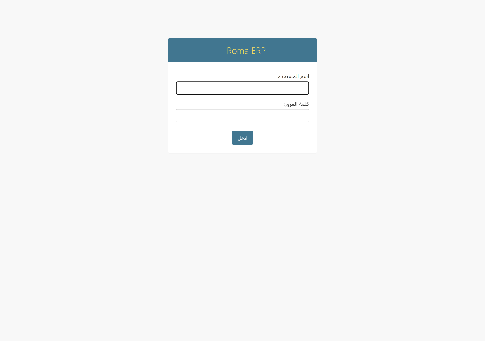
شاشة تسجيل الدخول — اكتب اسم المستخدم وكلمة السر ودوس "تسجيل الدخول"
مهم: الباسورد بتاعك سرّي. متكتبهوش لحد، ولو حسّيت إن حد عرفه قول للمدير يغيّره.
لو الشاشة قالت "اسم المستخدم أو كلمة السر غلط": غالباً فيه حرف غلط، أو الـ Caps Lock مفعّل (بيكتب كابيتال). راجع وحاول تاني.
0.3 شكل الشاشة بعد ما تدخل
بعد ما تدخل هتلاقي الشاشة مقسّمة جزئين:
على اليمين (القائمة الجانبية / Sidebar): ليستة بكل أقسام السيستم. دي اللي بتتنقل بيها بين الشاشات.
النص (مساحة الشغل): هنا بتظهر البيانات والجداول والخانات اللي بتملاها.
القائمة الجانبية مقسّمة لمجموعات، كل مجموعة جواها شاشات:
المجموعة
الشاشات اللي جواها
بتستخدمها في إيه
CORE
بيانات الشركة · دليل الحسابات · قيود اليومية
الإعدادات الأساسية والمحاسبة (غالباً المدير بس)
INVENTORY
المنتجات · المنتجات الفرعية · الـ SKUs · حركات المخزون
المنتجات الرئيسية والفرعية والمخزن
SALES
العملاء · سندات القبض · فواتير المبيعات · مرتجعات المبيعات
0.4 الأزرار والكلمات اللي هتقابلك في كل شاشة (احفظها)
الشاشات كلها بتشتغل بنفس الطريقة، فلو فهمت الأزرار دي مرة، هتعرف تستخدم أي شاشة:
زر "إضافة ➕ / Add": فوق على الشمال. بيفتحلك صفحة فاضية تكتب فيها سجل جديد (عميل جديد، فاتورة جديدة...).
زر "حفظ / Save": تحت في الصفحة. بيحفظ اللي كتبته. من غير حفظ، اللي كتبته بيضيع.
"حفظ وإضافة آخر": بيحفظ ويفتحلك فاضية تكتب واحد تاني بسرعة.
"حفظ والاستمرار في التعديل": بيحفظ ويسيبك في نفس الصفحة عشان تكمّل.
خانة البحث 🔍: فوق الجدول. اكتب فيها اسم أو رقم وادوس Enter عشان تلاقي سجل بسرعة.
الفلاتر (على الشمال جنب الجدول): بتقلّل اللي ظاهر قدامك (مثلاً تشوف فواتير شهر معيّن بس).
الخانة اللي عليها نجمة أو مكتوب جنبها (إجباري): لازم تملاها، السيستم مش هيحفظ من غيرها.
قاعدة ذهبية: أي حاجة بتكتبها مش بتأثر على حاجة لحد ما تدوس حفظ.
0.5 أهم مفهوم في السيستم كله: "مسوّدة" و "مُرحّل"
ده أهم جزء في الدليل. اقراه مرتين.
أغلب المستندات (الفواتير، السندات، المشتريات، أوامر الإنتاج) بتعدّي على مرحلتين:
المرحلة الأولى: مسوّدة (Draft)
ده وانت لسه بتكتب وتجهّز المستند.
تقدر تعدّل فيه، تمسح، تزوّد، تنقّص — براحتك.
مهم جداً: وهو مسوّدة، مش بيأثر على أي حاجة. المخزن زي ما هو، حساب العميل زي ما هو، مفيش قيود اتكتبت. كإنه ورقة في إيدك بتسوّد فيها.
المرحلة الثانية: مُرحّل (Posted)
بعد ما تراجع وتتأكد إن كل حاجة صح، بتدوس زر الترحيل (Post).
ساعتها السيستم بيعمل كل حاجة "للحقيقي": يخصم المخزن، يحدّث حساب العميل، يكتب القيود.
وبعد الترحيل بيتقفل المستند فمتقدرش تعدّله. (لو فيه غلط، فيه زر إلغاء بيعكس العملية).
اعتبرها كده:
مسوّدة = بتكتب الشيك بقلم رصاص، تقدر تمسح.
ترحيل = ختمته وسلّمته، خلاص بقى رسمي.
النصيحة: راجع كله وانت لسه مسوّدة. لما تطمن، ادوس ترحيل. مفيش عجلة.
0.6 الأرقام والكسور
كل الأرقام في السيستم بتظهر بالشكل ده:
5,500.00
الفاصلة , بتفصل الآلاف (يعني خمسة آلاف وخمسمية).
النقطة . للقروش/الكسور (يعني .00 معناها مفيش قروش، و .50 نص جنيه).
مثال: 12,750.25 معناها اتناشر ألف وسبعمية وخمسين جنيه و25 قرش.
0.7 الخانات اللي بتتملي لوحدها (متلمسهاش)
فيه خانات السيستم بيحسبها أو بيكتبها لوحده، سيبها فاضية وانت بتضيف جديد:
- أرقام المستندات: رقم الفاتورة، كود العميل، رقم الأمر... بتتولّد تلقائياً عند الحفظ (مثلاً العميل بياخد كود C0001).
- الإجماليات: مجموع الفاتورة، الرصيد، التكلفة... السيستم بيجمعها لوحده.
- الخانات المكتوب عليها "للقراءة فقط": دي بتتعرض بس، متتكتبش.
لو حاولت تكتب في خانة محسوبة، يا إما مش هتعرف، يا إما السيستم هيتجاهل اللي كتبته ويحسب الصح.
0.8 إزاي تبدأ يومك على السيستم (روتين سريع)
افتح المتصفح وادخل (Login).
روح على القسم بتاعك من القائمة الجانبية.
اعمل شغل اليوم: فواتير، تحصيلات، إدخال مخزن... إلخ.
أي مستند مهم، راجعه وهو مسوّدة الأول، وبعدين رحّله.
آخر اليوم، لو محتاج، اطبع اللي محتاج تطبعه.
دلوقتي يلا نبدأ ندخل على الشاشات واحدة واحدة. 👇
قسم INVENTORY (المخزون)
القسم ده بتعرّف فيه السيستم على المنتجات اللي بتبيعها، وبيتابع الكميات في المخزن.
1. المنتجات والمنتجات الفرعية
⚠️ طريقة تعريف المنتجات بقت على مستويين — خد بالك من ده كويس:
1. المنتج الرئيسي = الموديل الأساسي وكل «عقله»: نوع القماش، عدد القطع في الدستة، نسبة الهالك، والوصفة لكل مقاس (كمية القماش + المصنعية + سعر البيع + الإكسسوارات).
2. المنتج الفرعي = الإصدار اللي بتبيعه فعلاً (لون معيّن) = اسم + لون قماش + صورة بس. كل الباقي بيرثه من المنتج الرئيسي تلقائياً.
ليه اتقسمت؟ عشان لو عندك نفس الموديل بـ 5 ألوان، تعرّف الوصفة والسعر مرة واحدة على المنتج الرئيسي، وتعمل 5 منتجات فرعية (لون لكل واحد) من غير ما تعيد إدخال أي تكلفة أو سعر.
1-أ) المنتج الرئيسي (الموديل + الوصفة + السعر)
يعني إيه؟ ده «المخ» اللي بيحدد كل حاجة عن الموديل: الخامة، المقاسات، التكلفة، والسعر. المنتج الرئيسي لوحده ما بيتباعش — اللي بيتباع هو المنتجات الفرعية التابعة له.
الخطوات:
من القائمة الجانبية دوس المنتجات. هتظهر ليستة بكل الموديلات الأساسية.
دوس إضافة منتج (فوق على الشمال). املأ:
- اسم المنتج (إجباري) — مثلاً «تيشرت قطن رجالي».
- الاسم بالإنجليزي / الفئة (اختياري).
- نوع القماش/الخامة — اختار نوع القماش اللي بيتصنّع منه الموديل (من كتالوج «أنواع الأقمشة»). ده اللي هيتخصم من مخزون القماش وقت الإنتاج.
- عدد القطع في الدستة (افتراضياً 12).
يعني إيه دستة؟ الدستة وحدة بيع جملة = مجموعة قطع مع بعض. النظام كله بيشتغل بالدستة، فالكميات في الفواتير والتقارير بتتحسب دستات.
- نسبة الهالك % — الزيادة على القماش بسبب الهالك (مثلاً 5 = الكمية بالهالك = الكمية قبل الهالك × 1.05). بتتحسب على المنتج كله مش لكل مقاس.
- نشط — سيبها متعلّمة (✓).
تحت في جدول «الوصفة لكل مقاس» — ده أهم جزء. ضيف سطر لكل مقاس بتنتجه، وفي كل سطر:
- المقاس (S, M, L...).
- كمية القماش بالكيلو للقطعة الواحدة في المقاس ده (قبل الهالك).
- المصنعية للقطعة الواحدة.
- سعر البيع للقطعة — والسيستم بيحسب سعر الدستة لوحده.
- حد إعادة الطلب (لما المخزون ينزل تحته يبقى لازم تنتج تاني).
- «إكسسوارات المقاس» — احفظ الأول، وبعدين من اللينك ده ضيف إكسسوارات المقاس (زراير، أكياس...) والكمية لكل قطعة.
دوس حفظ.
مهم: التكلفة والسعر والمقاسات كلها بتتعرّف هنا على المنتج الرئيسي مرة واحدة، وكل المنتجات الفرعية التابعة له بتاخدها تلقائياً.
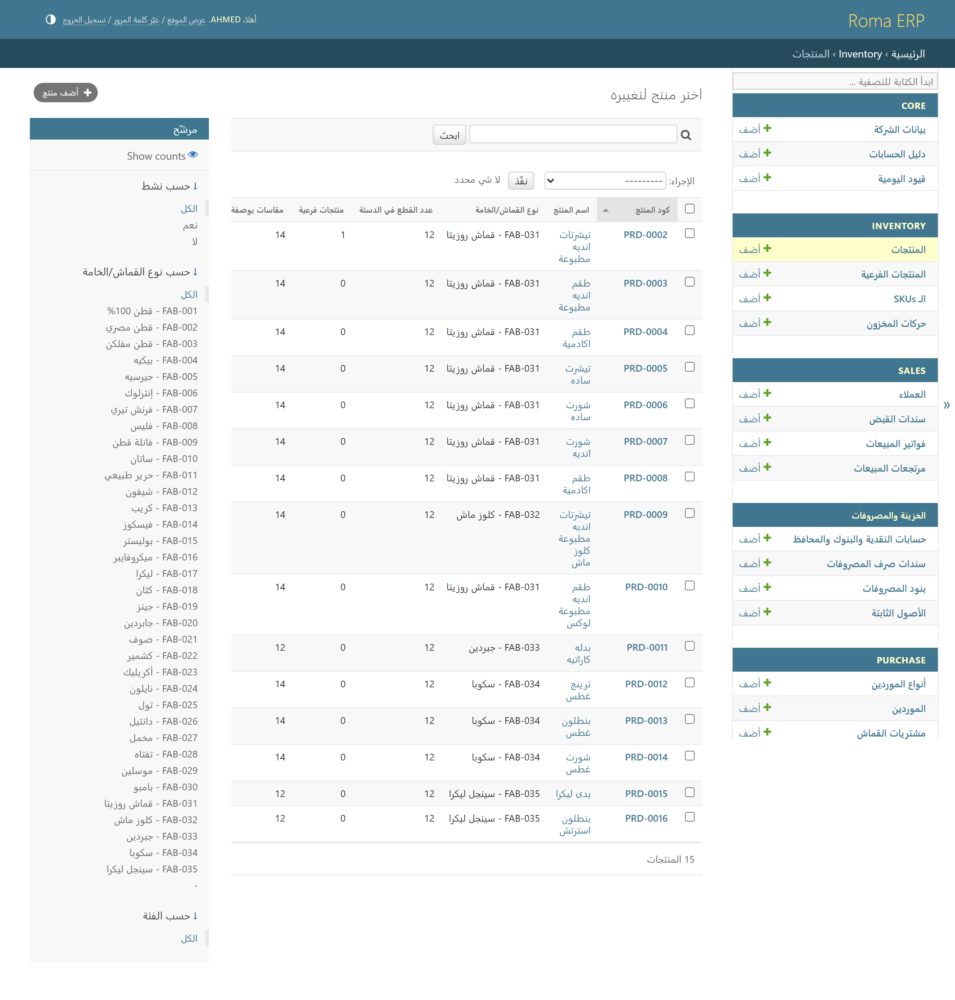
شاشة المنتجات — ليستة الموديلات الأساسية وزر «إضافة منتج»
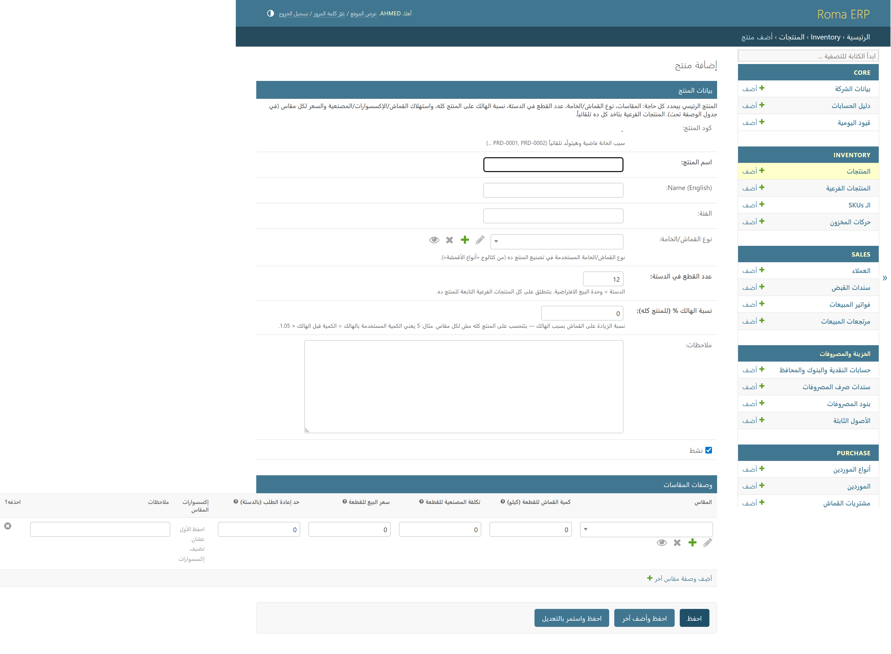
صفحة إضافة منتج رئيسي — البيانات فوق وجدول الوصفة لكل مقاس تحت
1-ب) المنتج الفرعي (الإصدار القابل للبيع)
يعني إيه؟ ده اللي بتبيعه فعلاً — إصدار/لون من المنتج الرئيسي. مثلاً المنتج الرئيسي «تيشرت قطن رجالي» ليه منتجات فرعية: «تيشرت قطن رجالي أحمر»، «... أزرق»، وهكذا.
بياخد إيه من المنتج الرئيسي؟ المقاسات، الأسعار، الوصفة (قماش/إكسسوارات/مصنعية)، عدد القطع في الدستة — كله تلقائياً. انت بس بتحدد: الاسم، لون القماش، والصورة.
الخطوات:
من القائمة الجانبية دوس المنتجات الفرعية. هتظهر ليستة بكل الإصدارات.
دوس إضافة منتج فرعي. املأ:
- المنتج الرئيسي (إجباري) — اختار الموديل الأساسي اللي ده تابع له. أول ما تختاره وتحفظ، السيستم هيجيب منه المقاسات والأسعار والوصفة.
- الاسم (إجباري) — اسم الإصدار زي ما بتناديه (يُفضّل تكتب اللون في الاسم).
- لون القماش المستخدم (مهم جداً ⚠️) — اللون اللي هيتخصم من مخزون القماش وقت الإنتاج. المخزون متخزّن باللون، فلازم تختار اللون الصح عشان الخصم يبقى من نفس اللون. لو اخترت لون غلط، هيتخصم من رصيد لون تاني.
- نشط — سيبها متعلّمة (✓).
«بيتورّث من المنتج الرئيسي» — صندوق للعرض بس بيوريك نوع القماش وعدد القطع في الدستة وعدد المقاسات اللي هتتولّد. مش بتكتب فيه حاجة.
قسم الصورة: دوس «اختيار ملف» وحدّد صورة المنتج (بتظهر في التقارير والفواتير).
دوس حفظ. بعد الحفظ، السيستم بيولّد SKU لكل مقاس تلقائياً (بتظهر تحت كجدول للعرض فقط).
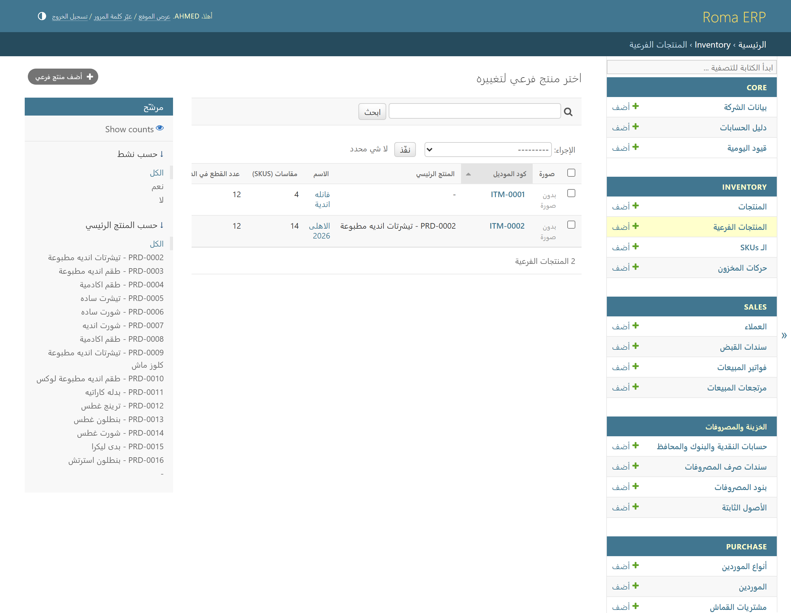
شاشة المنتجات الفرعية — ليستة الإصدارات وزر «إضافة منتج فرعي»
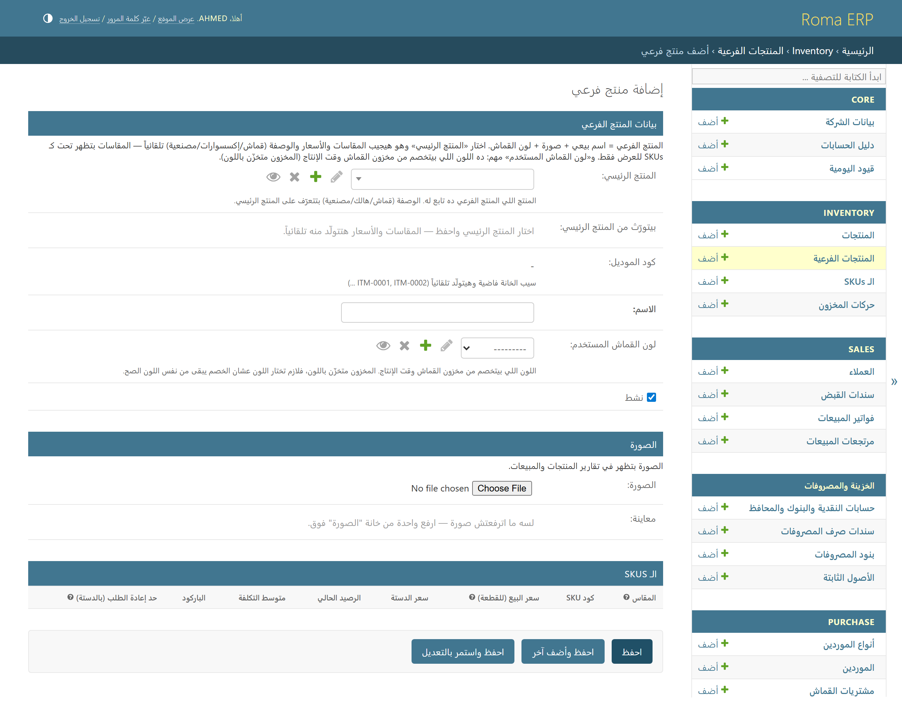
صفحة إضافة منتج فرعي — اختار المنتج الرئيسي + لون القماش + الصورة
خطأ شائع: نسيان لون القماش المستخدم. من غيره الإنتاج مش هيعرف يخصم من أنهي رصيد لون.
معلومة: الأسعار والمقاسات مش بتتعدّل هنا — لو عايز تغيّر سعر أو تضيف مقاس، ده بيتم على وصفة المنتج الرئيسي (خطوة 1-أ)، وكل المنتجات الفرعية هتتحدّث تلقائياً.
2. الـ SKUs (مقاسات المنتجات)
يعني إيه SKU؟ كلمة معناها "منتج بمقاس محدد". يعني "تيشرت قطن أحمر" ده منتج فرعي، لكن "تيشرت قطن أحمر - مقاس L" ده SKU. كل مقاس ليه SKU لوحده، وعشان كده ليه مخزون وتكلفة لوحده.
منين بتيجي؟ الـ SKUs بتتولّد لوحدها أول ما تحفظ المنتج الفرعي — سطر لكل مقاس موجود في وصفة المنتج الرئيسي. مش محتاج تضيفها بإيدك.
الخطوات (للاطلاع غالباً):
دوس الـ SKUs من القائمة. هتشوف ليستة كل مقاسات كل المنتجات الفرعية.
سعر البيع بييجي من وصفة المنتج الرئيسي (للقراءة فقط هنا) — لو عايز تغيّره، غيّره على الوصفة.
خانات الكود والمخزون الحالي ومتوسط التكلفة كمان للقراءة فقط — بتتحدّث لوحدها مع الفواتير والإنتاج.
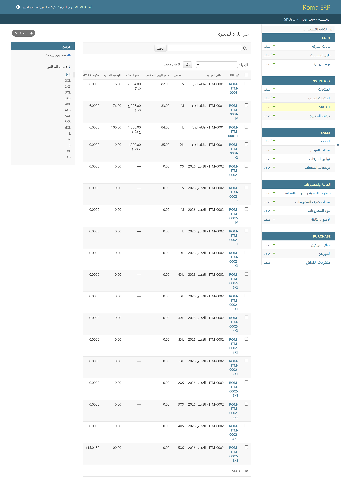
شاشة الـ SKUs — كل سطر = منتج بمقاس محدد (بتتولّد تلقائياً)
3. حركات المخزون (شاشة للاطلاع فقط)
يعني إيه؟ ده سجل بيكتب فيه السيستم كل دخول وخروج للمخزن: كل بيع (خروج)، كل إنتاج (دخول)، كل مرتجع (دخول). زي كشف حساب بس للبضاعة.
مهم تفهم: الشاشة دي للقراءة بس. متقدرش تكتب فيها بإيدك، وده مقصود — عشان السجل يفضل صح ومحدش يعبث فيه. بتتولّد لوحدها كل ما تعمل فاتورة أو إنتاج.
الخطوات:
دوس حركات المخزون.
تقدر تفلتر بالتاريخ أو نوع الحركة عشان تلاقي حاجة معيّنة.
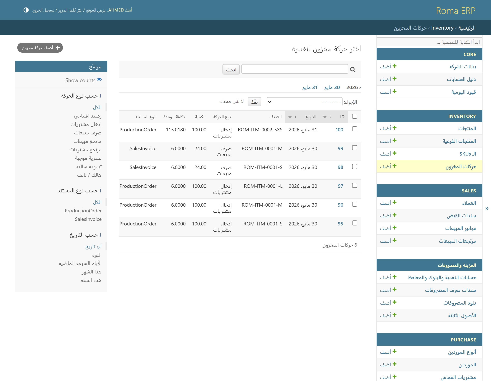
شاشة حركات المخزون — سجل بكل دخول وخروج (قراءة فقط)
بتستخدمها امتى؟ لما تحب تتأكد ليه مخزون منتج بقى الرقم ده، فتشوف كل الحركات اللي حصلتله.
قسم SALES (المبيعات)
ده القسم اللي بيشتغل عليه موظف المبيعات أغلب اليوم.
4. العملاء
الغرض: تسجّل بيانات كل عميل مرة واحدة، وبعدين السيستم يتابع رصيده (هو مدين لك بكام).
الخطوات:
دوس العملاء ← إضافة عميل.
املأ:
- الاسم بالعربي (إجباري).
- التليفون والمحافظة.
- مدة السداد (بالأيام) — كام يوم مسموح للعميل ياخدهم قبل ما يدفع. (مثلاً 30 يوم).
- حد الائتمان — أقصى مبلغ مسموح للعميل يكون مدين بيه. لو وصله، السيستم هينبّهك.
دوس حفظ. (كود العميل بيتولّد تلقائياً زي C0001).
في ليستة العملاء:
- عمود الرصيد الحالي بيوريك العميل مدين لك بكام.
- زر كشف حساب بيفتحلك كل حركات العميل (فواتيره ودفعاته).
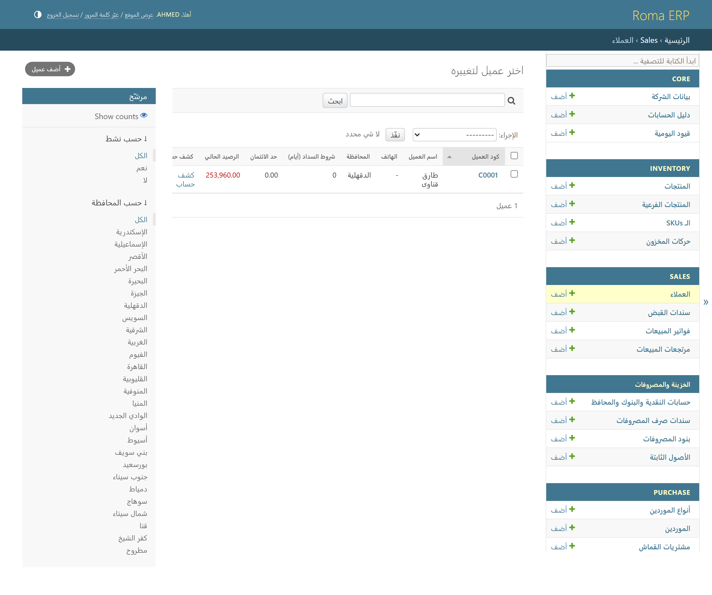
شاشة العملاء — عمود الرصيد وأزرار كشف الحساب
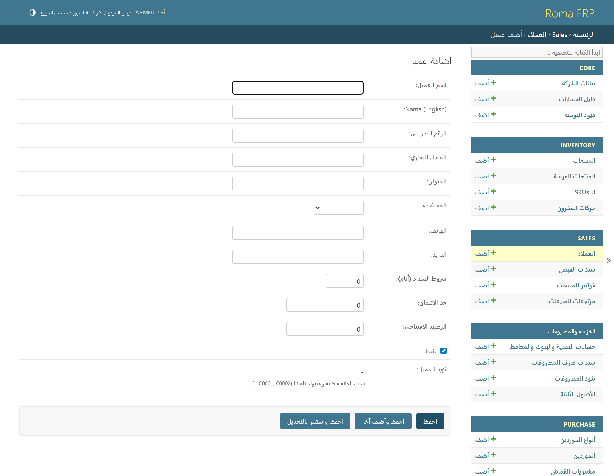
صفحة إضافة عميل
يعني إيه رصيد؟ الرصيد = الفلوس اللي للعميل عليها (مديونيته). لما تبيعله بياخد فاتورة فرصيده بيزيد، ولما يدفع بينزل.
5. فواتير المبيعات
الغرض: تسجّل عملية بيع لعميل. لما ترحّلها، السيستم بيخصم المخزن ويزوّد مديونية العميل ويكتب القيد المحاسبي.
الخطوات:
دوس فواتير المبيعات ← إضافة فاتورة.
اختار العميل والتاريخ.
(اختياري) لو فيه خصم على الفاتورة كلها: اكتب نسبة الخصم % أو مبلغ الخصم. ولو الدفع جزء كاش وجزء آجل، حدّد ده.
في جدول البنود تحت (ده قلب الفاتورة): ضيف سطر لكل منتج بتبيعه:
- اختار المنتج بالاسم.
- اختار المقاس — هتلاحظ إن القائمة بتوريك مقاسات المنتج اللي اخترته بس (السيستم بيفلتر لوحده).
- اكتب الكمية.
- السعر بيظهر لوحده من بيانات المنتج (تقدر تعدّله لو فيه اتفاق خاص).
- عايز منتج تاني؟ ضيف سطر جديد.
دوس حفظ. هتفضل في صفحة الفاتورة وتشوف الإجماليات اتحسبت تحت.
صفحة إضافة سند قبض — العميل والمبلغ وجدول التخصيصات على الفواتير
7. مرتجعات المبيعات
يعني إيه؟ لما عميل يرجّعلك بضاعة (مقاس غلط، عيب...)، بتسجّل المرتجع. ساعتها البضاعة بترجع المخزن وقيمتها بتتشال من حساب العميل.
الخطوات:
دوس مرتجعات المبيعات ← إضافة مرتجع.
اختار العميل، و(لو معروفة) الفاتورة الأصلية اللي البضاعة اتباعت فيها.
طريقة سريعة لو راجع كله: بعد ما تختار الفاتورة الأصلية وتحفظ، هيظهر زر نسخ البنود من الفاتورة — بيجيب كل بنود الفاتورة كمرتجع جاهز، وانت بعدين تمسح السطور اللي مرجعتش.
أو ضيف البنود يدوي في الجدول (المنتج + المقاس + الكمية + السعر).
اكتب سبب الإرجاع (مهم للمتابعة).
دوس حفظ، راجع، وبعدين ترحيل المرتجع — البضاعة ترجع المخزن والقيمة تتعكس من حساب العميل.
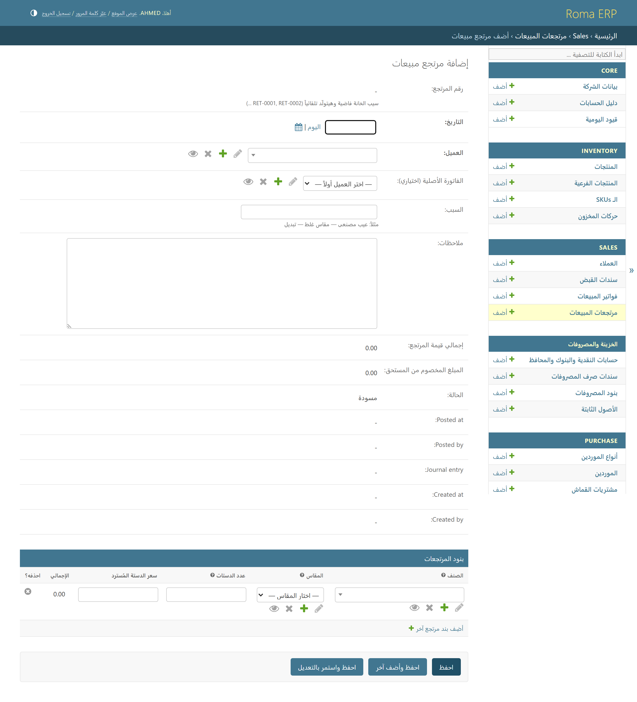
صفحة إضافة مرتجع مبيعات — اختيار العميل والفاتورة الأصلية وبنود المرتجع
قسم الخزينة والمصروفات
القسم ده بتدير منه فلوسك (الخزن والبنوك والمحافظ)، وبتسجّل مصروفات الشركة وأصولها الثابتة.
الخزينة: حسابات النقدية والبنوك والمحافظ
الغرض: تقدر تكون عندك أكتر من حساب فلوس — صندوق كاش، حساب في بنك مصر، حساب في البنك الأهلي، محفظة فودافون كاش... وكل حركة قبض أو دفع أو مصروف بتختار منها فلوسها طلعت أو دخلت في أنهي حساب.
الخطوات:
من مجموعة الخزينة والمصروفات دوس حسابات النقدية والبنوك والمحافظ ← إضافة.
املأ:
- اسم الحساب (مثلاً "صندوق المحل" أو "بنك مصر - فرع وسط البلد").
- النوع: نقدية (خزنة) / بنك / محفظة إلكترونية.
- رقم الحساب أو مزود المحفظة (اختياري).
- حساب دليل الحسابات المرتبط — الحساب المحاسبي اللي الفلوس بتتسجّل فيه.
دوس حفظ (لسه مسوّدة)، راجع، وبعدين ترحيل — السيستم بيخصم الفلوس من الحساب ويكتب القيد.
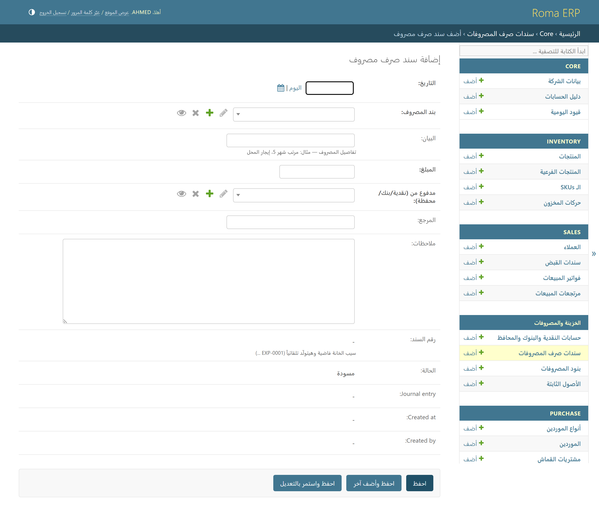
صفحة إضافة سند صرف مصروف — البند والمبلغ والحساب المدفوع منه
بنود المصروفات: فيه شاشة لوحدها لإدارة بنود المصروفات (تضيف أو تعدّل بند). هتلاقيها في نفس المجموعة.
سجل الأصول الثابتة
يعني إيه أصل ثابت؟ حاجة بتشتريها للشركة وبتفضل معاك سنين — مكنة، عربية، أوضة كمبيوتر، أثاث... مش بضاعة بتتباع. الشاشة دي بتسجّلها وتحتفظ بسجل بيها.
الخطوات:
دوس الأصول الثابتة ← إضافة.
املأ:
- اسم الأصل (مثلاً "ماكينة أوفر لوك").
- الفئة (آلات ومعدات / سيارات نقل / أثاث...).
- تاريخ الشراء والتكلفة.
- طريقة الدفع ومدفوع من (الحساب اللي دفعت منه) أو المورد (لو آجل).
- الرقم التسلسلي والمكان وملاحظات (اختياري).
صفحة إضافة أصل ثابت — الاسم والفئة والتكلفة وطريقة الدفع
ملاحظة: السيستم بيسجّل شراء الأصل بس (مفيش حسابات إهلاك). الغرض إنه يبقى عندك سجل بكل أصول الشركة وقيمتها.
قسم PURCHASE (المشتريات والموردين)
القسم ده بتسجّل فيه اللي بتشتريه واللي بتدفعه للموردين.
8. أنواع الموردين
ليه بنصنّف الموردين؟ عشان عندك أنواع مختلفة: مورد قماش، مصبغة، مورد إكسسوارات، صاحب مكنة... كل نوع بيظهر في الشاشة المناسبة بس، فبيريّحك من اللخبطة.
الخطوات:
دوس أنواع الموردين ← إضافة.
اكتب الاسم بالعربي (مثلاً "مورد قماش") وترتيب الظهور (رقم بيرتّب اللي يظهر الأول).
دوس حفظ.
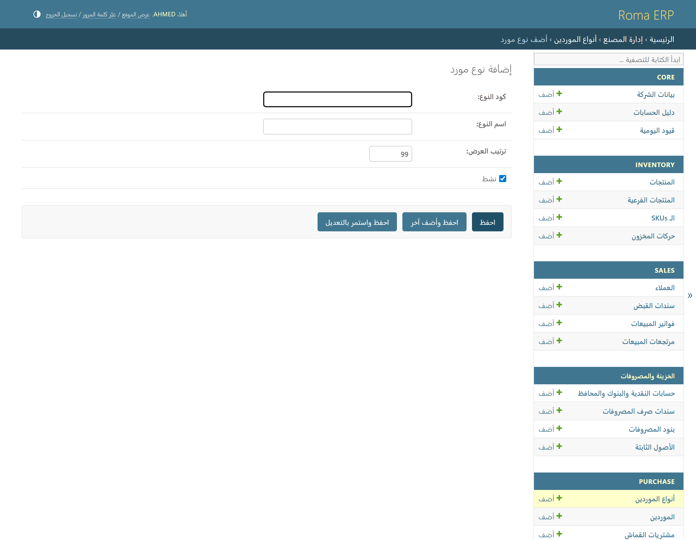
صفحة إضافة نوع مورد
تعمل ده امتى؟ مرة واحدة في الأول، وقت تجهيز السيستم. بعد كده نادراً ما تضيف نوع جديد.
9. الموردين
الغرض: تسجّل بيانات كل مورد، والسيستم يتابع رصيده (احنا مدينين له بكام).
الخطوات:
دوس الموردين ← إضافة مورد.
املأ:
- الاسم (إجباري).
- نوع المورد (إجباري — من اللي عملناه في خطوة 8).
- التليفون والعنوان والرقم الضريبي (اختياري).
دوس حفظ.
في الليستة:
- عمود الرصيد الحالي بيوري احنا مدينين للمورد بكام.
- زر 💰 ادفع بيفتحلك سند دفع جاهز للمورد ده على طول.
- زر كشف حساب بيوري كل تعاملاتك معاه.
انتج: بعد ما المصنع يخلّص، بتدوس زر "انتج" مرة واحدة — فالسيستم يخصم القماش (بالكمية بالهالك من الوصفة)، يضيف المنتج التام للمخزن، يعمل كل القيود، ويقفل الأمر. مفيش إدخال كميات يدوي — القماش والإكسسوارات كلها بتيجي من وصفة المنتج الرئيسي.
الخطوات بالتفصيل:
أ. إنشاء الأمر (مرحلة الخطة)
دوس أوامر الإنتاج ← إضافة أمر إنتاج.
في بيانات الأمر:
- التاريخ.
- الموديل (منتج فرعي) (إجباري) — اختار الموديل الفرعي من القائمة. لازم يكون متعرّف قبل كده في «المنتجات الفرعية» (قسم INVENTORY).
اسم الأمر بييجي تلقائياً من اسم الموديل — مفيش خانة «اسم/وصف الموديل» تكتبها بإيدك.
نوع القماش بييجي من المنتج الرئيسي، ولون القماش اللي هيتخصم بييجي من الموديل الفرعي نفسه.
العميل (اختياري — لو الأمر مخصوص لعميل).
رقم الأمر والحالة للقراءة فقط (بيتولّدوا لوحدهم).
كميات المقاسات: لكل سطر اختار المقاس واكتب الكمية المطلوب إنتاجها. تقدر كمان تربط السطر بـ ملاحظة منتج / بيانات قص من القائمة (أو تعمل واحدة جديدة بزر ➕) — دي اللي بيشتغل عليها القصّاص (الصدر/الظهر/الكم...).
مجموعات التشغيل (اختياري): لكل مجموعة اكتب الاسم + المكنة + كميات المراحل (تشغيل/تشطيب/جودة/كوي). السيستم بينبّهك لو مجموع أي مرحلة مش مساوي لإجمالي القطع.
🟦 مفيش إدخال يدوي للقماش أو الإكسسوارات! جدول «استهلاكات القماش» للعرض فقط وبيتعبّى لوحده من وصفة المنتج الرئيسي. والإكسسوارات بتتحمّل لوحدها برضه من الوصفة. انت مش بتدخّل أي كميات قماش أو إكسسوار بإيدك.
دوس زر 📋 حفظ وحمّل الإكسسوارات + افحص القماش (الأزرق تحت). ده:
- بيحفظ الأمر.
- بيحمّل الإكسسوارات تلقائياً من وصفة المنتج (بالكميات حسب عدد القطع).
- بيفحص توافر القماش ويحسب الكمية المتوقعة (قبل/بالهالك) — ولو القماش مش مكفّي بينبّهك.
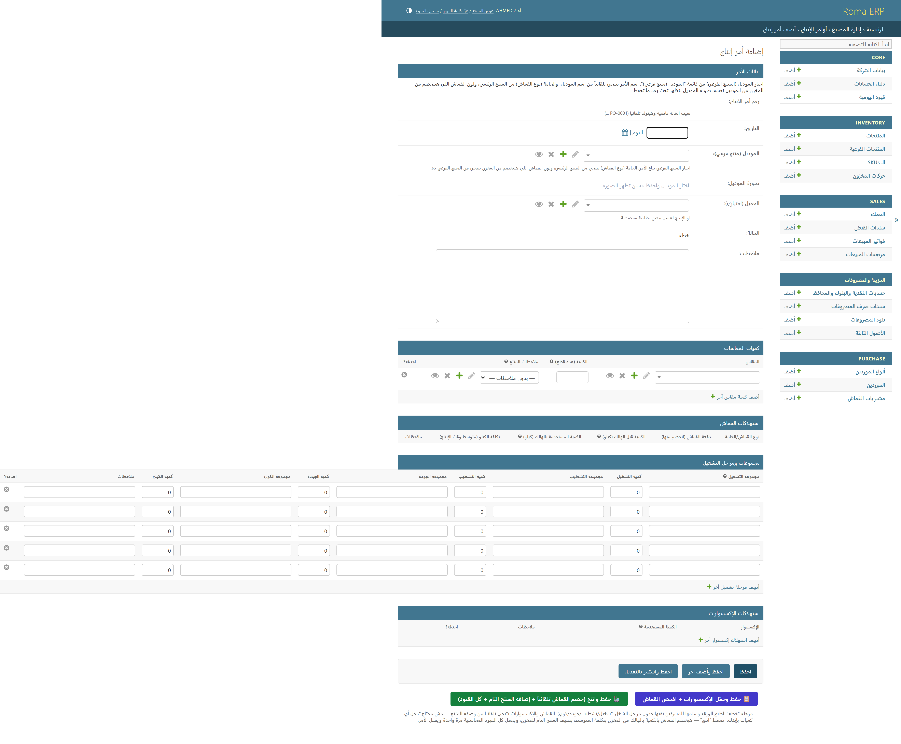
صفحة إنشاء أمر إنتاج — اختار الموديل الفرعي + كميات المقاسات؛ القماش والإكسسوارات بتيجي من الوصفة
ب. طباعة ورقة الخطة وتسليمها للمصنع
دوس زر 🖨️ طباعة ورقة الأمر كاملة (فوق على الشمال) واطبعها.
الورقة فيها جدول مراحل الشغل (تشغيل/تشطيب/جودة/كوي) عشان المشرفين يملوه بخط إيدهم وقت التسليم.
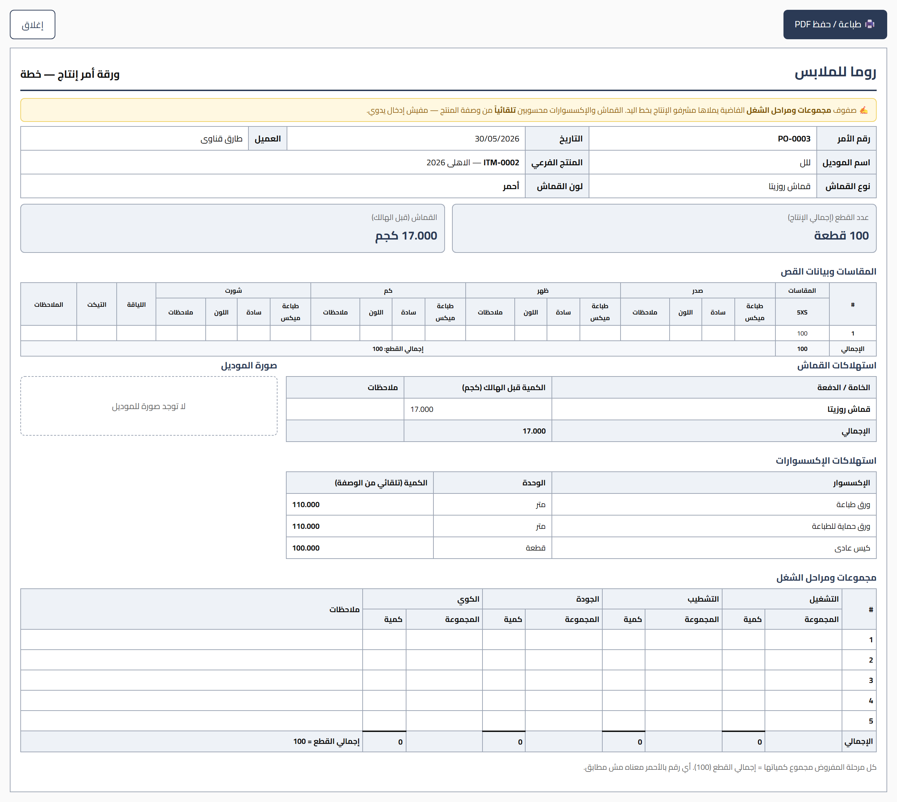
ورقة طباعة أمر الإنتاج — بيانات القص والمقاسات وجدول مراحل الشغل
ج. الإنتاج (مرحلة انتج)
بعد ما المصنع يخلّص، افتح نفس الأمر ودوس زر 🏭 حفظ وانتج (الأخضر تحت). السيستم هيعمل كل ده مرة واحدة لوحده:
- يخصم القماش من المخزن بالكمية بالهالك من دفعات نفس النوع واللون بتكلفة المتوسط (average).
- يضيف المنتج التام للمخزن، كل مقاس بتكلفته هو (مش متوسط موحّد).
- يكتب كل القيود المحاسبية (قماش/إكسسوار/مصنعية تحت التشغيل، وبعدين المنتج التام).
- يقفل الأمر (الحالة تبقى "تم الإنتاج").
مهم تعرفه: المصنعية بتترسمل في تكلفة المخزون مقابل مستحق في الميزانية (بتتدفع للعمال لاحقاً من شاشة سندات الدفع).
د. مراجعة التكلفة (بعد الإنتاج)
في آخر صفحة الأمر هتلاقي جدول «تكلفة كل مقاس لوحده»: لكل مقاس بيوريك القماش + الإكسسوار + المصنعية + تكلفة الوحدة + تكلفة المقاس كله.
- كل مقاس متحسوب بتكلفته هو — مش متوسط موحّد على كل المقاسات.
- مجموع (تكلفة الوحدة × الكمية) لكل المقاسات بيساوي إجمالي تكلفة الأمر بالظبط.
خطأ شائع: اختيار لون قماش غلط على الموديل الفرعي → الخصم بيتم من رصيد لون تاني. اتأكد إن لون الموديل صح قبل ما تدوس «انتج».
15. الإكسسوارات
الغرض: قائمة بالإكسسوارات (أزرار، خيط، أستيك...) بأسعارها، عشان تستخدمها في أوامر الإنتاج.
الخطوات:
دوس الإكسسوارات ← إضافة.
اكتب الاسم بالعربي، الوحدة (قطعة / متر / بكرة...)، وتكلفة الوحدة الافتراضية.
دوس حفظ (الكود تلقائي).
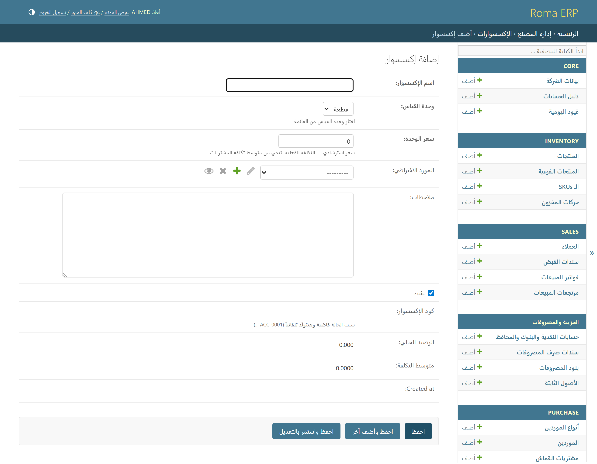
صفحة إضافة إكسسوار
16. المقاسات
الغرض: قائمة بكل المقاسات (S, M, L, أو أرقام 38, 40...) المستخدمة في السيستم كله.
الخطوات:
دوس المقاسات ← إضافة.
اكتب الكود (اسم المقاس) وترتيب الظهور (رقم عشان يترتبوا صح في الجداول — مثلاً S قبل M قبل L).
دوس حفظ.
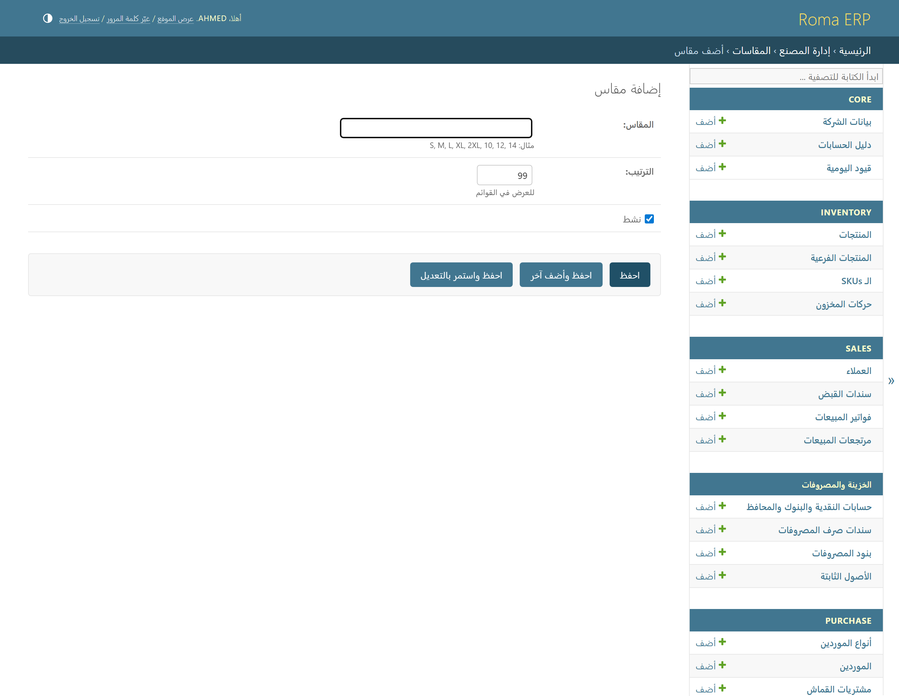
صفحة إضافة مقاس
تعمل ده امتى؟ مرة واحدة في الأول. بعد كده المقاسات جاهزة لكل المنتجات.
17. حركات القماش (شاشة للاطلاع فقط)
الغرض: سجل بكل حركة قماش (استلام شراء، صرف للإنتاج...). شاشة قراءة فقط — بتتولّد لوحدها.
الخطوات:
دوس حركات القماش.
فلتر بنوع الحركة أو التاريخ أو دفعة القماش عشان تتابع رصيد قماش معيّن.
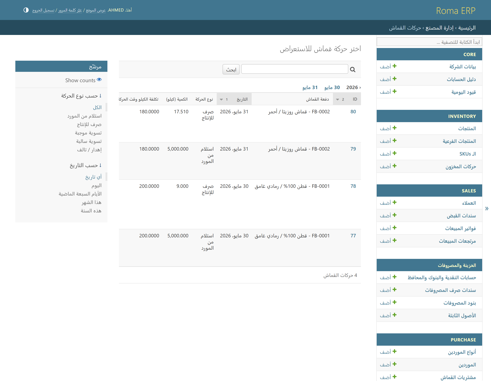
شاشة حركات القماش — سجل بكل استلام وصرف للقماش (قراءة فقط)
18. ملاحظات المنتج
الغرض: بيانات القص والملاحظات بتتعمل غالباً من جوه أمر الإنتاج (خطوة 14). الشاشة دي بتجمّع كل الملاحظات في مكان واحد للمراجعة.
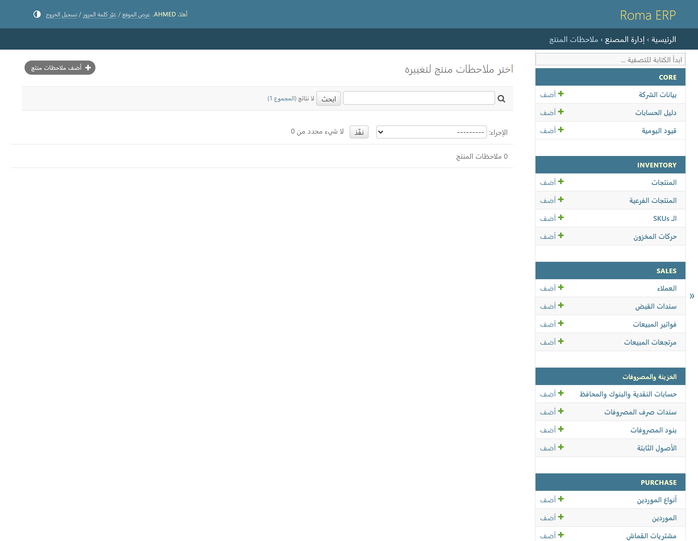
شاشة ملاحظات المنتج — تجميع لكل بيانات القص للمراجعة
قاموس المصطلحات (ارجعله أي وقت)
المصطلح
المعنى ببساطة
مسوّدة (Draft)
المستند لسه بتجهّزه، تقدر تعدّل، ومبيأثرش على حاجة.